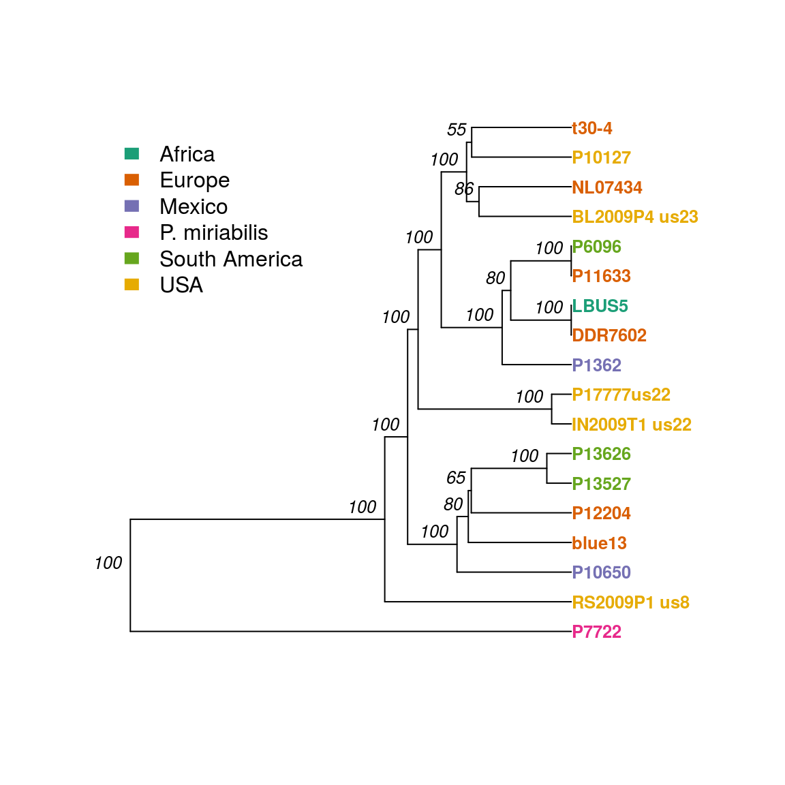
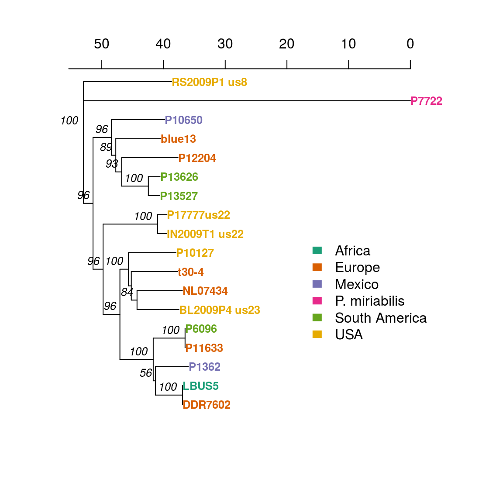

Using the distances we calculated for our dataset, we can also reconstruct a distance tree. A distance tree is a recosntruction of the relationships between the different samples. To reconstruct a distance tree, we only require a distance matrix (of any distant relevant to our molecular marker).
A basic distance tree can be reconstructed using two main algorithms: UPGMA (Unweighted Pair Group Method with Arithmetic Mean) and Neighbor-joining (for more info in these distance methods go to this wiki page). These methods will use the distance matrix to determine the similarities between samples and reconstruct a tree.
After the tree is recosntructed and the relationships between samples have been defined, there are mechanisms to determine if these relationships are well supported by the dataset. This is called the bootstap support. In a glimpse, bootstrap support is a non-parametric resampling of the traits used to contruct the tree, in order to determine the conficence values of a branch. When bootstrap support is near 100% it means that that node is present regardless of how the genetic variants are subset, giving us confidence in the presence of that node. A bootstrap support decreases it means that a node is sensitive to how the variants are subset, or that some of the variants support the node and others refute it. This gives us less confidence in the presence of a node because it’s presence is sensitive to which variants we use in the analysis.
We will reconstruct an distance tree based in UPGMA, by using the distance we calculated in the previous steps. In addition, we will calculate the confidence of our relationships using 1000 bootstrap replicates for support:
library("poppr")
library("ape")
x.tree <- aboot(x, cutoff = 50, quiet = TRUE, sample = 100, distance = dist, showtree = F)
cols <- brewer.pal(n = nPop(x), name = "Dark2")
plot.phylo(x.tree, cex = 0.8, font = 2, adj = 0, tip.color = cols[pop(x)],label.offset = 0.0125)
nodelabels(x.tree$node.label, adj = c(1.3, -0.5), frame = "n", cex = 0.8,font = 3, xpd = TRUE)
#axisPhylo(3)
legend(-2,18,c("Africa","Europe","Mexico","P. miriabilis","South America","USA"),cols, border = FALSE, bty = "n")
We can also change the algorithm to reconstruct the tree. This would be how a neighbor-joining tree will look like for the same dataset
x.tree <- aboot(x, cutoff = 50, quiet = TRUE, sample = 100, distance = dist, showtree = F, tree = "nj", root = T)## Warning in aboot(x, cutoff = 50, quiet = TRUE, sample = 100, distance =
## dist, : Some branch lengths of the tree are negative. Normalizing branches
## according to Kuhner and Felsenstein (1994)x.tree <- root(phy=x.tree, outgroup = "P7722")
x.tree <- ladderize(x.tree)
plot.phylo(x.tree, cex = 0.8, font = 2, adj = 0, tip.color = cols[pop(x)],label.offset = 0.0125)
nodelabels(x.tree$node.label, adj = c(1.3, -0.5), frame = "n", cex = 0.8,font = 3, xpd = TRUE)
axisPhylo(3)
legend(35,10,c("Africa","Europe","Mexico","P. miriabilis","South America","USA"),cols, border = FALSE, bty = "n")
The tree reconstruction show us that no populations (indicated by color) that are monophyletic. This shows that there is a lack of genetic population structure associated with geographic location. We will deal with statistical methods to determine population structure in the next section.